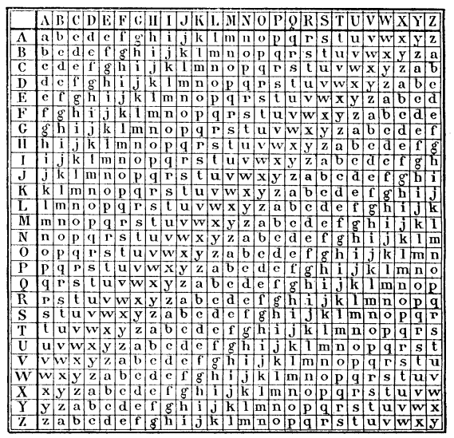

En cryptographie, le chiffrement par décalage, aussi connu comme le chiffre de César ou le code de César (voir les différents noms), est une méthode de chiffrement très simple utilisée par Jules César dans ses correspondances secrètes (ce qui explique le nom « chiffre de César »). Le texte chiffré s'obtient en remplaçant chaque lettre du texte clair original par une lettre à distance fixe, toujours du même côté, dans l'ordre de l'alphabet.
Les caractères spéciaux et accents ne sont pas gérés dans l'algorithme.
Résultat
L’alphabet morse ou code morse, est un code permettant de transmettre un texte à l’aide de séries d’impulsions courtes et longues, qu’elles soient produites par des signes, une lumière, un son ou un geste.
Résultat
Acrostiches, lecture une ligne sur deux
Ce chiffrement introduit la notion de clé. Une clé se présente généralement sous la forme d'un mot ou d'une phrase. Pour pouvoir chiffrer notre texte, à chaque caractère nous utilisons une lettre de la clé pour effectuer la substitution.
Principe: Permet de chiffrer et déchiffrer un message a l'aide d'une clé. On a des traces de son utilisation depuis le temps des égyptiens en -2000.
Chiffre de Vernam
Aussi appellé Masque jetable (introduction d'une clé variable). Consiste a combiner le message avec une clé aléatoire au moins aussi longue que le message et unique ( et donc jetable ). Assez simple, prévue pour etre utilisée aussi a la main, normalement en temps de guerre comme pendant la 1ere guerre mondiale. Le systeme offre une garantie de sécurité quasi absolue.
RC4 ( un parmi tant d'autres , utilisé notamment pour la norme de clé Wi-fi Wep )
Concu par Mr Rivest en 1987. Il est supporté par differentes normes, dont le WEP (chiffrement de clef wi-fi). On commence par remplir un tableau de 256 octets en repetant la clef autant de fois que nécessaire. Ensuite, des octets sont déplacés dans le tableau via des opérations simples. Une fois bien mélangé, on utilise les bits obtenus pour chiffrer les données via une table logique XOR ( exclusive OR )
Principe: Partie de la cryptographie ou l'on différencie une clé publique et une clé privée. En opposition a la cryptographie symétrique ou une clé secrete est publique et commune entre les différents utilisateurs.
DSA (signature)
Digital Signature Algorythm Beaucoup plus complexe,il se compose de 2 clefs generées en 2 phases. La premiere comporte le choix des parametres d'algorithmes, la deuxieme calcule les clefs publiques et primaires. Les données sont hachées en SHA1 ou SHA2 dans une longueur parametrée et traitées selon différents parametres.
RSA ( chiffrement + signature )
Basé sur le nom de ses inventeurs (Rivest-Shamir-Adleman) Utilise une clé public pour chiffrer l'information et une clé secrete pour la déchiffrer, toutes sont des grands nombres premiers qui possedent une valeur auxiliaire utilisée. L'asymétrie des clefs se base sur des grands nombres premiers, difficilement factorisables. Il est possible de décrypter le code en cherchant les nombres premiers. De part la longueur de ses clefs, le chiffrement en RSA est relativement lent.
Principe ( pixels transformés en code binaire additionné par table logique XOR avec le code binaire d'une deuxième photo ) Le principe est simple, chaque pixel est traduit en son code couleur, ce même code est additionné avec un code couleur choisit comme étant la clé. Le résultat est de nouveau transformé en image pixel par pixel.
Puissance colossale , sécurité infaillible , mise en oeuvre très difficile pour l'instant.
Equations multiples faisant intervenir jusqu'a 120 variables
Noyer le message dans un signal chaotique et retrouver le signal en connaissant les caracteristiques du signal
Echange de clefs sur un canal